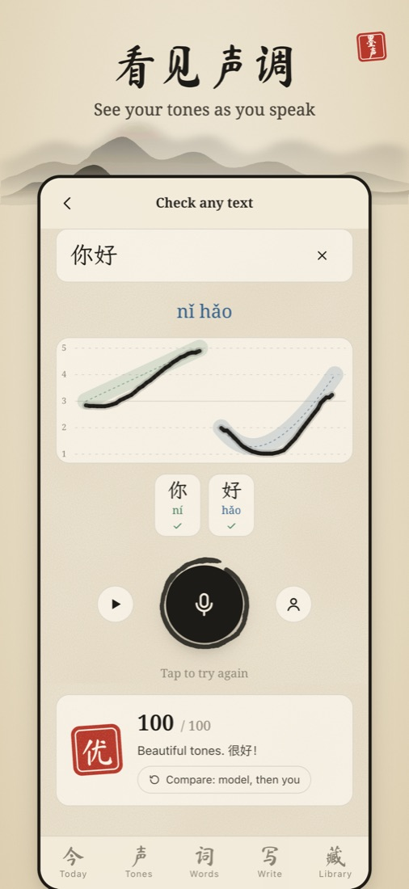
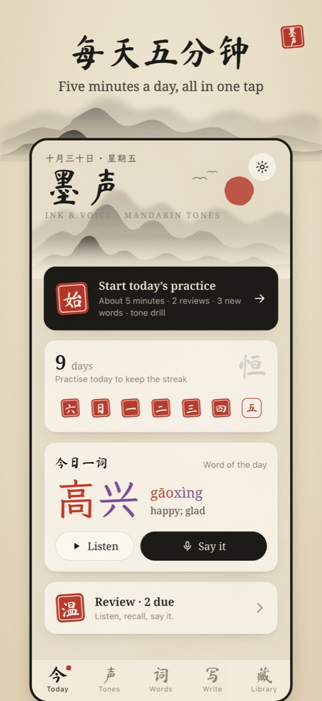
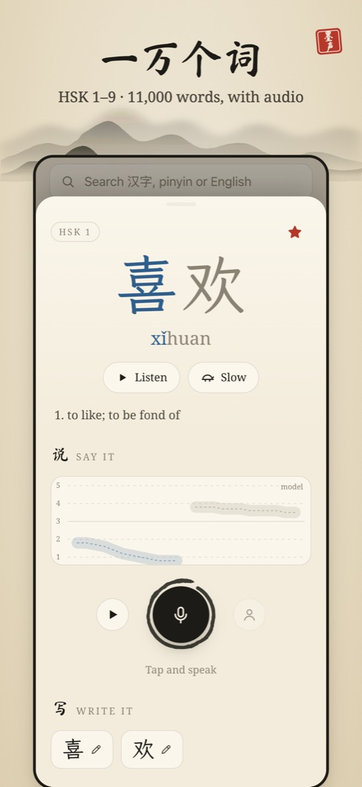

MÒSHĒNG · INK & VOICE
Speak, and watch your pitch brushed onto the page. 墨声 hears every tone, shows exactly where it slipped, and tells you how to fix it — all on your device.



Live pitch drawing on a five-level tone staff, with a verdict and one clear tip for every syllable.
One tap starts reviews, new words and a drill aimed at your weakest tone.
11,000 words with search by hanzi, pinyin or English, stroke order and graded readings.
Tone analysis runs entirely on your phone. No account, no ads, no tracking.